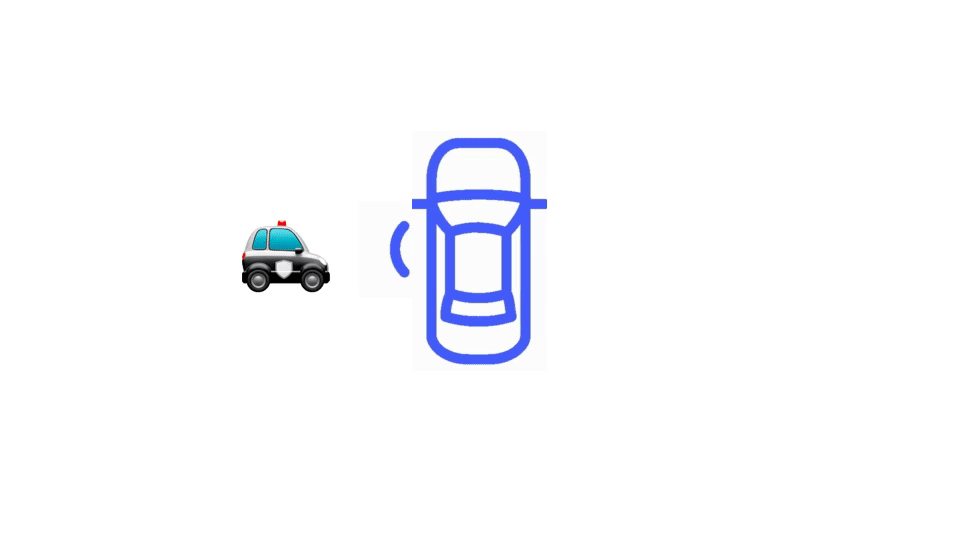

{% load static %}
{% block cta %}
<style>
    .contenedor {
    position: relative; /* Establece el contenedor como posición relativa */
}

.contenedor img {
    position: absolute; /* Establece las imágenes como posición absoluta */
    top: 0; /* Ajusta la posición superior según sea necesario */
    left: 0; /* Ajusta la posición izquierda según sea necesario */
    z-index: 1; /* Ajusta el índice z para superponer la segunda imagen */
}
#gif{
    width: 315px;
    top: 50px;
    left: 90px;
}
.contenedor{
    margin-left: 300px;
    height: 300px;
}
    /* .coche {
        padding: 30px;
        background-color: black;
        position: relative; 
    }

    .marco-botones {
        border: 5px solid #333; 
        position: absolute;
        top: 0;
        left: -50px; 
        width: 50px;
        height: 100%;
        background-color: #333;
    }

    .boton {
        width: 100%;
        height: 20px;
        background-color: #666;
        margin-top: 30px;
    }
    #rueda {
        width: 30px;
        height: 30px;
        background-color: #666;
        border-radius: 100%; 
        margin-bottom: 10px;
        height: 40px;
        width: 100%;
        background-color: #666;
        margin-bottom: 10px;
    } */
</style>
 <!-- Start cta section -->
 <section class="py-5 bg-primary">
    <div class="container">
        <div class="contenedor">
            
            
        </div>
        <!-- <div class="coche">
            <div class="marco-botones">
                <div id="rueda"></div>
                <div class="boton"></div>
                <div class="boton"></div>
                <div class="boton"></div>
                <div class="boton"></div>
                <div class="boton"></div>
                <div class="boton"></div>
            </div>
            
        </div> -->
    </div>
    <!-- end container -->
</section>
<!-- End cta section -->
{% endblock cta %}